Lesson 5: Quarto
Interative Visualizations
Topics today
- How computers work
- Running Quarto
- Writing in Quarto
- Publishing to GitHub pages
How Computers Work
(for the casual user)
How files work: generalities
- Programs store files as strings of binaries (0 & 1).
- Programs have their own conventions & formats to read & write files into binary.
- The “file extension” is a part of a file name for programs to quickly know the file format.
- Your OS (Windows, macOS) helps make this association easier by double click to open with default programs.
- But file extension is just part of a file name: you can change or omit it.
How files work: text files
- A common format is plain text for human-readability.
- Notepad in Windows, TextEdit in macOS, etc. read plain text files, by convention
.txt. - Markdown (.md), HTML (.html), etc. are enhanced text files.
- Markdown syntax draws from texting/email conventions. See Wikipedia.
- Notepad in Windows, TextEdit in macOS, etc. read plain text files, by convention
How files work: notebooks
- Extended comments in code is harder to read.
- This led to popularity of computational notebooks:
- Markdown for text explanations
- Code snippets for code/simulation/data exploration.
- iPython did this for Python and stored its files as
.ipynb - iPython changed name to Jupyter to reflect their support of Julia, Python, and R, but kept the extension name
.ipynb. - Google Colab implements Jupyter notebook in the cloud.
How files work: Quarto
- The Quarto program makes publishing notebooks in presentable formats easier.
- It uses its own enhanced Markdown and stores files as
.qmd.- Global document metadata is stored at the top as YAML.
- Markdown blocks are as usual.
- Code blocks use three backticks as in
.md
Running Quarto
Running Quarto
- In RStudio:
- Create or open
.qmdfile - Press “Render” button to see results
- Create or open
- In VSCode:
- Create or open
.qmdfile, say “example.qmd” - In terminal run
quarto preview example.qmdfor live-preview;ctrl+Corcmd+Ckills this process. - In terminal run
quarto render example.qmdto create output files.
- Create or open
Writing in Quarto
Code blocks: type this
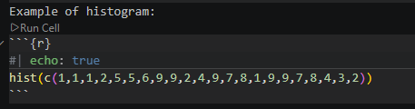
Code blocks: get this
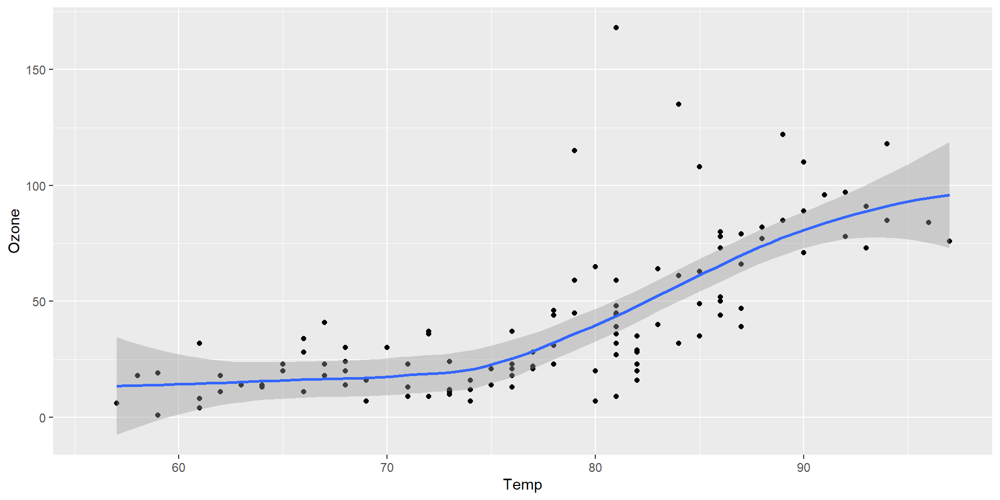
Figure 1: Temperature and ozone level.
Code blocks: some code chunk options
echo: falsehides code completelycode-fold: truefolds code insteadoutput: falseto not display computation outputlabel:is figure name for cross-referencing/hyperlinkfig-cap:is figure captionfig-altis alternative text for screen readers to read description of image
Metadata (YAML)
Sits at the top of your Quarto document and sets global document properties:
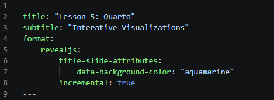
Output formats
format: htmlfor single webpageformat: dashboardfor data dashboardformat: revealjsfor slides on the webformat: pdffor printed documents- etc.
- For website (collection of webpages), see Quarto guide.
Output formats: html
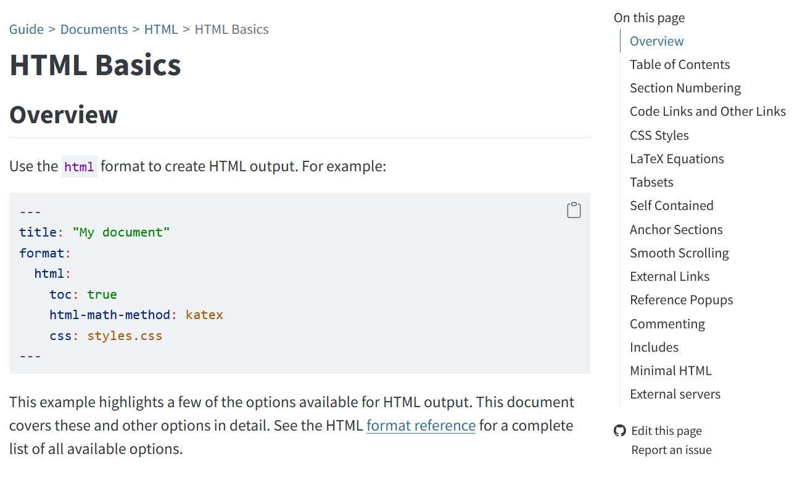
Example of a webpage
Output formats: dashboard
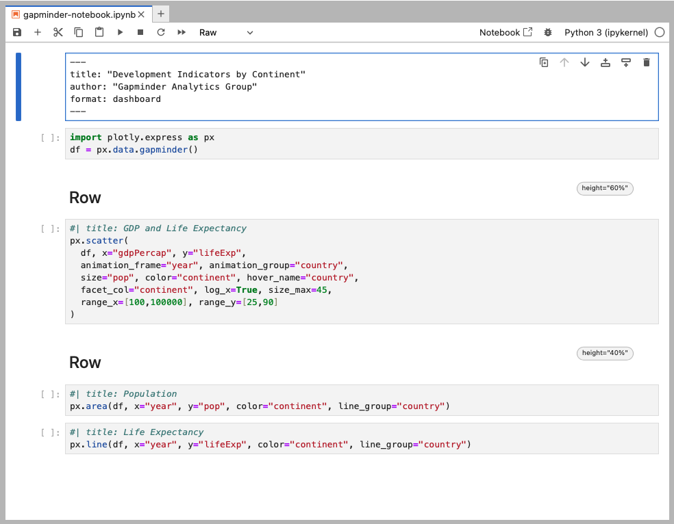
Example of dashboard code in Quarto
Output formats: dashboard

Example of resulting dashboard
Output formats: dashboard
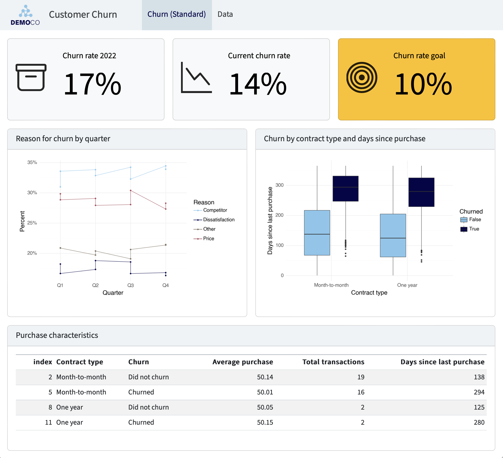
Example of customer churn data dashboard
Output formats guide
Go to Quarto’s guide webpage:
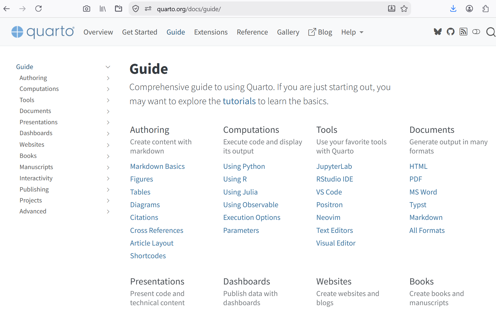
Markdown
See documentation.
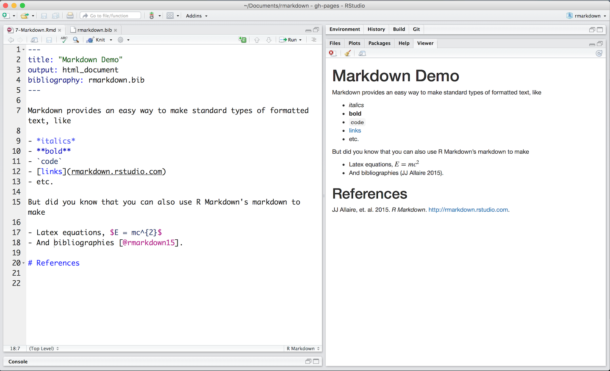
Example of Markdown and what is rendered
Quarto Markdown: div
“Div fencing” ::: wraps section in HTML divs. You can add custom or Quarto built-in classes to these divs:
::: {.border}
This content can be styled.
:::Quarto Markdown: span
Use square brackets around selection to add HTML spans:
::: {.callout-note}
Note that there are five types of callouts, including:
`note`, `warning`, `important`, `tip`, and `caution`.
:::{fig-align="center"}
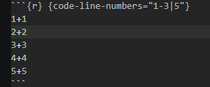
Quarto Markdown: span
Use square brackets around selection to add HTML spans:
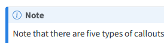
Quarto Markdown: reference
https://quarto.org/docs/authoring/markdown-basics.html#sec-divs-and-spans
Publishing to GitHub Pages
1. Create GitHub account
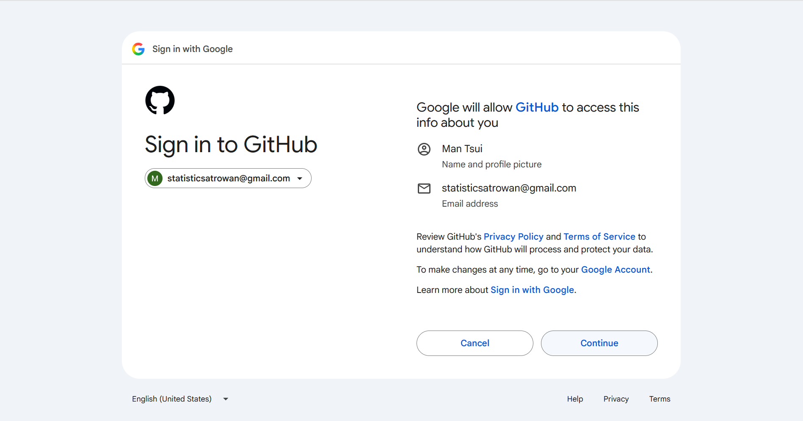
1. Create GitHub account
Choose a username appropriate to employers since your free website will be at yourusername.github.io:
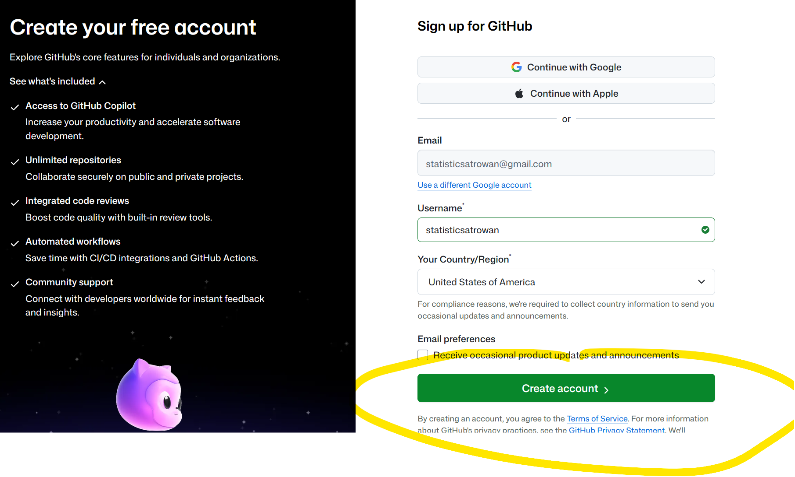
2. Create GitHub repo
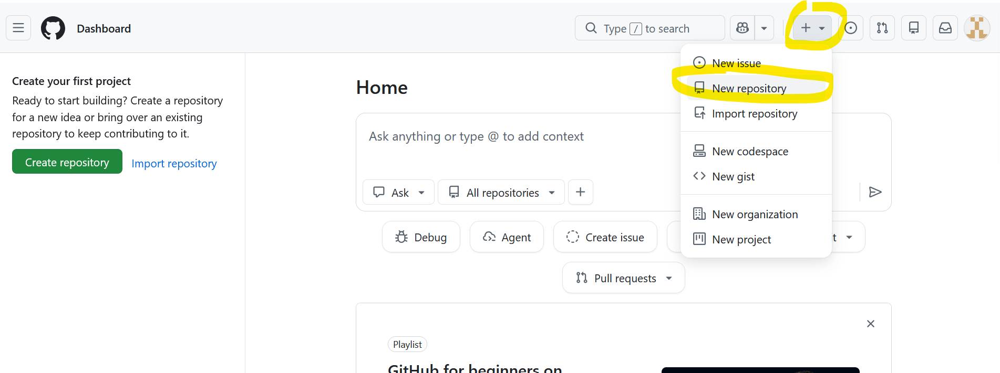
2. Create GitHub repo
The free website’s repo name must be yourusername.github.io
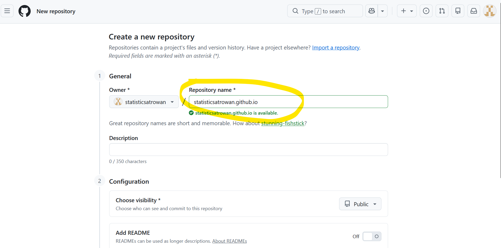
2. Create GitHub repo
Turn on “Add README” and hit “Create repository”:
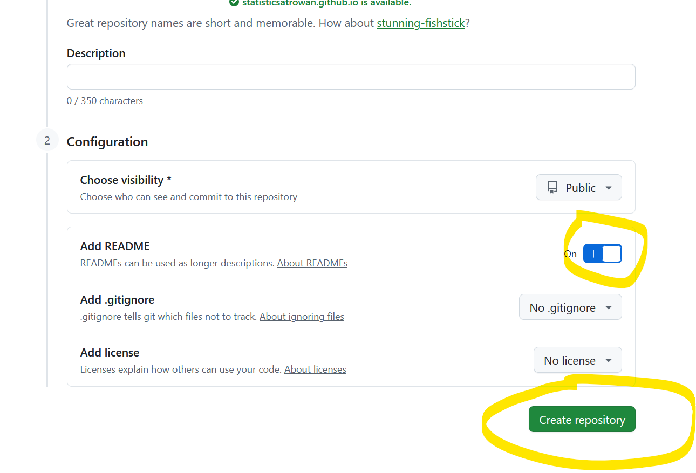
2. Create GitHub repo
What you should see now:
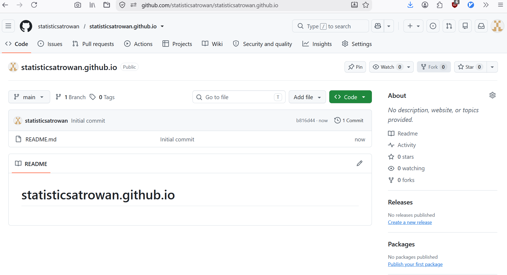
3. See your free website
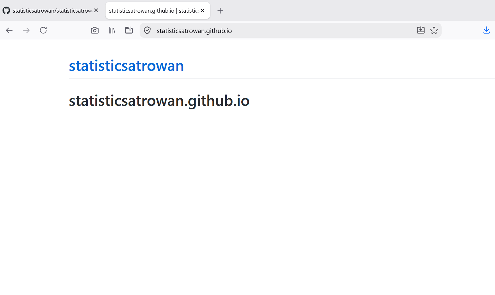
This is just the README.md which you can modify.
3. See your free website
Your website’s homepage would look even better if you upload a nice webpage named index.html.
4. Upload your project
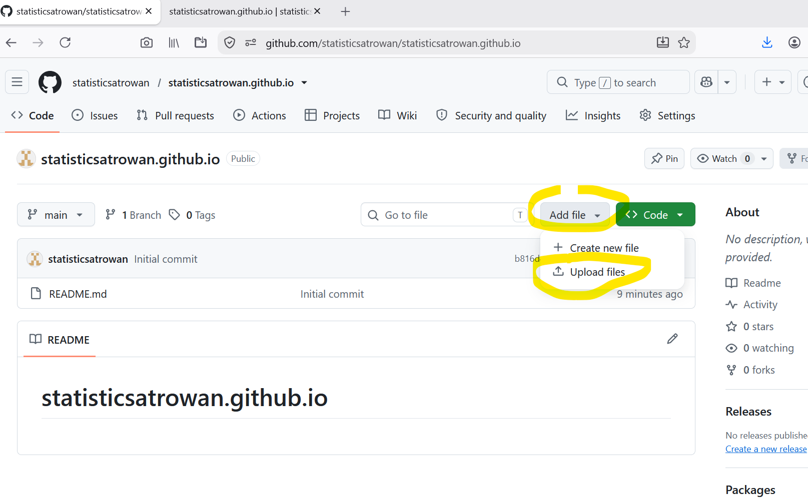
4. But wait: Quarto render the HTML
- In your Quarto file YAML, include
format:
html:
output-file: "index.html"Why?
index.htmlensures a clean URL: a server pointed at a folder automatically reads theindex.htmlof that folder. So your html file adopts your folder’s name.Now render your
.qmdin RStudio with “Render” button or in VSCode withquarto render yourfile.qmdin terminal.
4. Upload your project
Take your project folder including the _files folder which contains external dependencies (CSS, JS, etc.) to upload to GitHub:
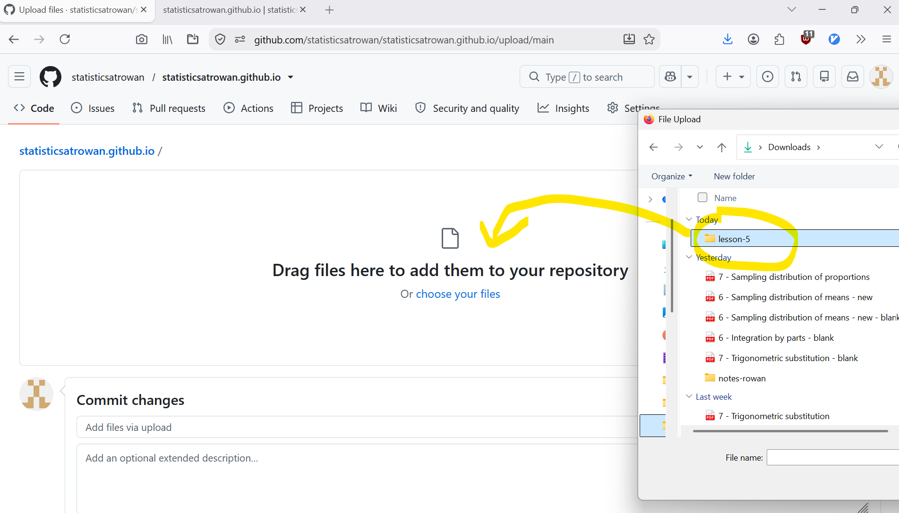
5. See your Quarto webpage
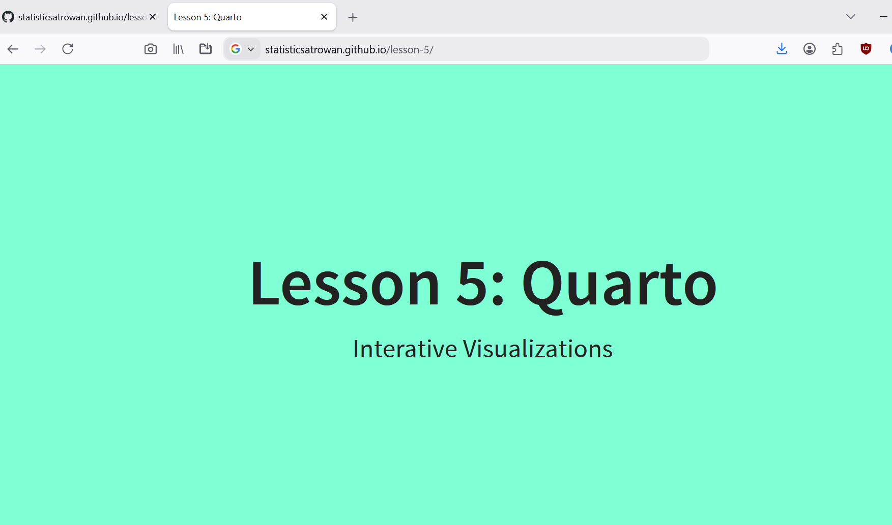
What else?
- On your free GitHub page: do not put secrets (confidential database, passwords, etc.)
- Push to GitHub faster? Use GitHub Desktop. See YouTube tutorial.